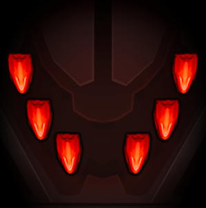

Campaign
Phoenix II —FAQ (IOS)

BOOKMARK
FAQ (IOS) by light_rock_zz
Version: 4.8 | Updated: 04/27/2025
FAQ of the Month Winner: January 2020 | Highest Rated Guide
Campaign
WARNING! This section is VERY spoiler heavy. A lot of content here will be obscured by inline spoilers like this. To read the inline spoilers, highlight the text in the inline spoilers.
- Every wave you cleared in the campaign for the first time will reward you with ¢5.
- Waves cleared in the Prologue do not reward credits.
- Revives
 cannot be used in campaign missions.
cannot be used in campaign missions. - You are free to use any ship/apex for the mission, unless the mission has provided you with a specific ship/apex
 .
. - If you started playing Phoenix 2 after v7.0, you must play until you unlock Campaign Mission #8 before you can start playing your daily missions and community missions
 .
. - If you started playing Phoenix 2 before v7.0, you should attempt Campaign Mission #1 at the least to avoid the pre-mission transmissions from triggering over and over again every time you login.
- You will be placed in a random leaderboard for each campaign mission.
- This leaderboard does not refresh, so you will stay with the same players for all of time.
- Rank does not determine which leaderboard you will be placed on.
- Generally, new players are placed separately from veteran players.
- You can replay any campaign mission at any point of time.
- Unlike daily or community missions, campaign missions are fixed. They never change or refresh.
- If you clear the campaign mission within a fixed time (different from campaign mission to campaign mission), you can earn a Par Time Beaten
 badge.
badge.- You can tell if you have earned the Par Time Beaten badge for a particular campaign mission by seeing the or icon at the top right corner of the campaign mission icon.
- You can tell if you have earned the Par Time Beaten
- If you clear the same campaign mission even faster and beat the developer's fastest time, you earn another badge called Firi Games Time Beaten
 for the same mission.
for the same mission.- You can tell if you have earned the Firi Games Time Beaten badge for a particular campaign mission by seeing the icon at the top right corner of the campaign mission icon.
- You can tell if you have earned the Firi Games Time Beaten
- The number of Par Time Beaten and Firi Games Time Beaten badges earned in campaign show up on your profile on all leaderboards.
- You can infer the number of Par Time Beaten and Firi Games Time Beaten badges obtained by the number of and icons shown respectively in the mission selection screen.
- You can infer the number of Par Time Beaten
- The total credit earnings from the Campaign add up to ¢7.600.
- This does not consider the Warp Gate instant activations and the final reward which may not appear if you already have it.
If you wish to read the campaign story and transmissions in your own language, read Appendix E2.
Prologue
The Invaders emerged from the void, determined to erase all civilizations of the galaxy.
The survivors band together and send their best pilots to avoid imminent doom...
| NPC Giving Transmission | Condition | Transmission |
|---|---|---|
Apex Pilot | Prologue Introduction Transmission #1 | Shazbot! My ship broke down! Don't touch anything while I make repairs. |
| If you move after Transmission #1 | ... wait ... what's that ... | |
| Transmission #2 | Incoming Invaders! I'm still repairing, you’ll have to fly! The ship follows your touch. | |
| Complete the movement tutorial | Good job. I fixed the main weapon. Blast those Invaders! | |
If you spam tap (5 times in rapid succession) Note: This transmission can be repeated throughout the Prologue if you keep doing this | No need for tapping. Just keep your finger on the screen to fire the weapons. | |
If you die on the Prologue Note: Dying in the Prologue will automatically revive you on the same wave you died on, unlike normal Phoenix Revives. | Don't worry about the wings. Only a direct hit on our blue core will destroy the ship. | |
| Clear Act 1 of Prologue | Nice shooting! The Missile launchers are ready any moment. Keep it up! | |
Reach the Final Wave of the Prologue Note: This transmission is repeated every time you die in this wave. | Yikes! A Condor-class with Doomsday Lasers. Keep us out of the red area when it's charging. | |
| Complete the Prologue | We made it! Great flying, you should be a pilot too! Let's get out of here. | |
Operator Mian | Post Prologue | Hi there, glad you joined us! I'm the Operator and will show you around. Let's start with your own ship! |
| We managed to get you a [Ship]! It's my favorite. Instructor Crubbs will guide you on your first missions. | ||
| Instructor Crubbs | Post Prologue | Rookie, I am your new Instructor. When I say shoot, you shoot. Got it? |
Trivia 1: The expression "Shazbot" is a curse word from an old '80s comedy show called Mork and Mindy. This word is an Orkan expression of surprise, excitement, dismay, or bewilderment which Mork frequently used. In the days of heavy TV censorship, this was a means of sneaking the word "sh*t" past the censors. This word wound up becoming a popular catchphrase. This word is used in the game Starsiege: Tribes. Both the devs of this game used to play a lot of both Starsiege: Tribes 1 & 2. This is especially Tribes 2, where both devs played on pretty high level competitively. One of the devs was even in the #1 team in Europe. (Although there were also players in the US server, it was not possible for the European and the US players to play together.)
Trivia 2: The Prologue features Invaders carrying special turrets that are not seen elsewhere. These include the pellet launchers on all Herons, Vulture and Condor in the Prologue which are special directional fan left/right types. The Eagle also features a special pellet spinner that uses ring walls, which is based off the current T2 pellet spinners (spiral) in daily missions (except the time for one full spiral is zero). Finally, the Vulture features 2 special arc spiral circle barriers pellet spinners, also based off the same current T2 pellet spinners (spiral) in daily missions.
Trivia 3: According to the devs, the dialogue of Operator Mian is meant to be more enthusiastic and bubbly, which is likely a defining characteristic of Operator Mian.
Chapter 1: Zhey Auna
Covers Campaign Mission 1 - 4.
Total Credit Earnings from Chapter 1 is ¢760.
Campaign Mission #1
After the Prologue, you are thrown straight into your first campaign mission.
Mission Description: Recruited into the fleet of Survivors, you are thrust into your first mission…
Mission Intel:
Total Reward for Completion: (3 Acts) × (4 Waves each) × ¢5 = ¢60
Video Walkthrough to earn Firi Games Time Beaten badge:
| NPC Giving Transmission | Condition | Transmission |
|---|---|---|
| Operator Mian | Re-login without attempting Campaign Mission #1 (You must have promoted away from Rookie before v7.0) | Pilot, we need your help. We are planning a campaign to analyse and attack the invaders. Crubbs will brief you. |
| Instructor Crubbs | Pre-Mission | The Invaders are everywhere, and we need every pilot to fight back. Let's plan your first missions on this Starmap. |
| Zhey Auna used to be a quiet sector, but Invader activity has been increasing lately. Let's clear them out. | ||
| Mission Start | Try to come back in one piece. Move out! | |
| Mission Complete | Not bad [Rank], you show potential. | |
Post Mission Note: If you have played this game pre-v7.0 or have already cleared this campaign mission before, this transmission does not appear. | I'm unlocking the Aura ability of your ship. | |
After Warp Gate Upgrade screen Note: If you have played this game pre-v7.0 or have already cleared this campaign mission before, this transmission does not appear. | Auras are advanced weapon systems. In the next mission I will explain how it works. | |
If you die and restart Note: This transmission repeats every 2 deaths. | Rookie, don't worry about the wings. Only a direct hit on the blue Core will destroy your ship. | |
Campaign Mission #2
Mission Description: Before you can join your squadron, a surprise attack puts your skills to the test…
Mission Intel:
Total Reward for Completion: (3 Acts) × (4 Waves each) × ¢5 = ¢60
Video Walkthrough to earn Firi Games Time Beaten badge:
| NPC Giving Transmission | Condition | Transmission |
|---|---|---|
Instructor Crubbs | Pre-Mission | Listen up! Even more Invaders have been sighted. They get bolder by the day. Strike back and clear this area. |
| Mission Start | Heads up [Rank]! We’ve got Invader movement nearby. | |
Reach Wave 2-2 Note: This transmission is repeated every time you reach Wave 2-2. Also interestingly, unlike normal tutorial transmissions, you can never die while the transmission is active. | [Aura Tutorial transmissions] Note: While Bullet EMP Tutorial Transmissions would normally appear, you can also trigger other Aura transmissions, especially if you pilot another ship given by the Warp Gate (that has a different Aura) into the mission. | |
| Mission Complete | Good use of the Aura ability. Keep in mind, each ship has three weapon systems. Make sure you use them! | |
| Post Mission | I have assigned you to your squadron. Report to Captain Merrick. Dismissed [Pilot Name]. | |
If you die and restart Note: This transmission repeats every 2 deaths. | Rookie, don't worry about the wings. Only a direct hit on the blue Core will destroy your ship. |
Campaign Mission #3
Mission Description: As you work to secure the sector, an unexpected new type of Invader emerges…
Mission Intel:
Total Reward for Completion: (3 Acts) × (4 Waves each) × ¢5 = ¢60
Special Notes: On completion of this mission, the Warp Gate becomes instantly recharged.
Invader Notes: The Armored Vulture in Wave 3-4 has a health of 162, rather than the normal Armored Vulture health of 243.
Video Walkthrough to earn Firi Games Time Beaten badge:
| NPC Giving Transmission | Condition | Transmission |
|---|---|---|
Captain Merrick | Pre-Mission | Attention [Rank]! Ready to blast some Invaders? I sure am! |
| The situation is heating up! A new fleet of Invaders arrived in the sector. Our job is to stop them. | ||
Mission Start | Alright, these Invaders are armored and fire shuriken. Be alert. | |
Clear Wave 2-4 | Keep your eyes open for a large Vulture-class Invader sighted in the area. Blast it like the rest! | |
Mission Complete | You nailed it [Pilot Name]! Those Invaders didn't know what hit them! | |
Operator Mian | Post Mission | Command located a large group of Invaders. Intercept them right away! |
Campaign Mission #4
Mission Description: Impressed by your skills, Command enlists your help to defeat an Invader force…
Mission Intel:
Total Reward for Completion: (4 Acts) × (4 Waves each) × ¢5 + (¢500 from Supply Drop) = ¢580
Video Walkthrough to earn Firi Games Time Beaten badge:
| NPC Giving Transmission | Condition | Transmission |
|---|---|---|
Operator Mian | Pre-Mission | Get ready for a longer mission. Good luck out there! |
Captain Merrick | Mission Start | A request straight from Command? Time to show what you're made of! |
Mission Complete | Fantastic! These longer missions are tough, but you blasted 'em good! | |
Operator Mian | Post Mission | Well done! Your performance didn't go unnoticed. You’ve earned extra credits! |
Captain Merrick | Post Supply Drop (You will receive ¢500) | [Rank], you're done here. Head to Gau Prime, I've got missions for you at the superstructure. |
Chapter 2: Gau Prime
Covers Campaign Mission 5 - 8.
Total Credit Earnings from Chapter 2 is ¢320.
Campaign Mission #5
Mission Description: During a routine patrol, an overwhelming wave of Invaders strikes…
Mission Intel:
Total Reward for Completion: (4 Acts) × (4 Waves each) × ¢5 = ¢80
Video Walkthrough to earn Firi Games Time Beaten badge:
| NPC Giving Transmission | Condition | Transmission |
|---|---|---|
Captain Merrick | Pre-Mission | You're patrolling the corridor here. Ready your ship, and upgrade your weapon systems. |
Mission Start | Invaders equipped with shields have been spotted, clear the area! | |
Mission Complete | The transit corridor is clear. Mission accomplished. | |
Operator Mian | Post Mission | Great, sensors show it's all clear, we'll send our convoys through immediately. |
Campaign Mission #6
Mission Description: As you rush to aid a convoy, relentless Invaders ambush from the void…
Mission Intel:
Total Reward for Completion: (4 Acts) × (4 Waves each) × ¢5 = ¢80
Special Notes: You must use the provided Phoenix Delta to clear this mission.
Video Walkthrough to earn Firi Games Time Beaten badge:
| NPC Giving Transmission | Condition | Transmission |
|---|---|---|
Operator Mian | Pre-Mission | Incoming distress call! We have a Phoenix ship on stand-by, jump in and launch immediately! |
Captain Merrick | Mission Start | A convoy is under attack, intercept those Invaders asap! |
Convoy AXV-515 | Clear Wave 3-4 | Mayday! Calling all ships in the area. We require immediate assistance. Help us out! |
Mission Complete (The convoy ship, slightly damaged, appears on screen) | That was a close one, you got the Invaders off our tail just in time! Thank you so much. | |
| Those Invaders came out of nowhere, we're jumping out while we can. | ||
Captain Merrick | Post Mission | Good thing they had a Phoenix ready to launch! Excellent flying. |
| We need to prevent this from happening again. | ||
Campaign Mission #7
Mission Description: On a recon mission, a mysterious anomaly is detected nearby…
Mission Intel:
Total Reward for Completion: (4 Acts) × (4 Waves each) × ¢5 = ¢80
Video Walkthrough to earn Firi Games Time Beaten badge:
| NPC Giving Transmission | Condition | Transmission |
|---|---|---|
Captain Merrick | Pre-Mission | We've set up a scouting mission to find out where those Invaders came from. |
Operator Mian | Mission Start (A full screen scan occurs) | Alright, we'll scan the area while you clear the remaining Invaders. |
Clear Wave 3-4 | Our scanners picked up an anomaly. Keep moving while we analyze the signal. | |
Mission Complete | Scanning complete! I've got the coordinates of the anomaly! | |
Captain Merrick | Mission Complete | Excellent! We'll use those to set a waypoint for your next mission. |
Post Mission (You will be promoted to Cadet if you were previously a Rookie . Interestingly, this transmission still appears even if you have promoted away from Rookie .) | You've proven yourself a top-notch pilot and earned a promotion! | |
Post Promotion to Cadet (Interestingly, these transmissions still appear even if you already have access to Daily Missions ) | You now have access to additional Daily Missions. Fly them anytime! | |
| Daily missions let you earn more credits and boost your rank. Keep up the good work! | ||
Post Promotion to Cadet
From this point onwards, you are no longer required to continue the campaign. As such, from this point onwards, in-line text spoilers like this will be used so as to not spoil the rest of the campaign story.
Here are some of the transmissions that can be given by Operator Mian.
| Condition | Operator Mian's Transmission |
|---|---|
Before starting your first Campaign Mission Note: This transmission can be repeated infinitely if you press the Back button on the Starmap without starting the mission. If you start the mission once, this transmission no longer repeats. This transmission is skipped if you have played before v7.0. | Everything is ready for your first mission! Hit Play to start! |
| After a mission is terminated with credits earned for the first time | You earn credits for beating new waves of Invaders. |
If you click on Community Tab before completing Campaign Mission #7 Note: This transmission will repeat every time you click on it. | Proceed further in the campaign to unlock communities. |
After reach Campaign Mission #3 & no ship upgrades purchased before Note: This transmission will repeat after every mission has ended, until you purchase an upgrade. | Don't forget to upgrade your ships. It helps a lot with defeating Invaders. |
| After purchasing your first ship upgrade | Great! Upgrades make a big difference. You'll see! |
| Post Promotion to Cadet (After Captain Merrick's Campaign Pre-Mission #8 Transmission) | Congratulations with your promotion! Check the Missions menu to find your new missions. |
Here you can find all your current missions, including your new Daily Missions. | |
| Click on the Revives | Revives are not enabled available in the campaign. Switch to a daily mission to use revives |
| Logged in after not playing any missions for some time | Welcome back! Your ship is ready for you. Let's go over your last briefing again. |
Campaign Mission #8
Mission Description: As you explore the source of the Invaders, a secret comes to light…
Mission Intel:
Total Reward for Completion: (4 Acts) × (4 Waves each) × ¢5 = ¢80
Video Walkthrough to earn Firi Games Time Beaten badge:
| NPC Giving Transmission | Condition | Transmission |
|---|---|---|
Captain Merrick | Pre-Mission | When you're ready, it's time to check out what the Invaders are up to at that anomaly. |
Mission Start | Approach the coordinates with caution, there's no telling what we'll find. | |
Operator Mian | Clear Wave 3-4 (A Wormhole opens up at the top of the screen) | Invaders are popping up out of nowhere! Wait, what's that… |
Clear Wave 4-1 | Looks like they're coming through that … wormhole!? Be careful! | |
Captain Merrick | Clear Wave 4-2 | We've seen enough, [Rank]. Clear those Invaders and head back immediately. |
Operator Mian | Mission Complete | Oh no, [Pilot Name]! It's too strong! |
Chapter 3: Redacted Venue
This Venue is the Wormhole.
Covers Campaign Mission 9 & 10.
Total Credit Earnings from Chapter 3 is ¢160.
Campaign Mission #9
Mission Description: Pulled into a wormhole, you must navigate the unknown to find your way home…
Mission Intel:
Total Reward for Completion: (4 Acts) × (4 Waves each) × ¢5 = ¢80
Video Walkthrough:
| NPC Giving Transmission | Condition | Transmission |
|---|---|---|
Operator Mian | Pre-Mission | C#^n yo# he%r me? |
Mission Start | #m #% … | |
>{"ħŹřřğȳ"}< | Clear Wave 3-4 | --{Ŗħř}-- --{źğē}-- --{ğȳź}-- |
| Mission Complete | --{zsZfsZsz}-- | |
Campaign Mission #10
Mission Description: Lost in the wormhole, you struggle to pick up a signal to escape…
Total Reward for Completion: (4 Acts) × (4 Waves each) × ¢5 = ¢80
Special Notes: On completion of this mission, the Warp Gate becomes instantly recharged.
Invader Notes: The Unprotected Condor in Wave 4-4 has a health of 550, rather than the normal Unprotected Condor health of 450.
Video Walkthrough to earn Firi Games Time Beaten badge:
| NPC Giving Transmission | Condition | Transmission |
|---|---|---|
>{"ħŹřřğȳ"}< | Pre-Mission | --{ąčř}-- --{ţǫǫą}-- --{ǫŴčą}-- |
Mission Start | --{Ŵřč}-- --{ţą}-- --{ččǫ}-- --{ƒšū}-- --{ńżž}-- --{ěěǫ}-- | |
Unknown Source | Clear Wave 3-4 | Pilot, this --zsZfsZsz-- Mian! Do you copy!? F--szfszszs-- found you --z-s-zfs-zss-- |
| .. -xZ0- Uploading coordinates now… -z-s-fssz- | ||
>{"ħŹřřğȳ"}< | Clear Wave 4-3 | --{čǫƒšūž}-- |
Unknown Source | Mission Complete | --z-s-zfs-zss-- reached it. Jump now! |
Chapter 4: Arcology CQ-6
Covers Campaign Mission 11 - 14.
Total Credit Earnings from Chapter 4 is ¢840.
Trivia 4: You can spot some Sinister Ravens lying around in the background of Arcology CQ-6 only in the campaign.
Campaign Mission #11
Mission Description: As you emerge in Invader space, you discover the true extent of their capabilities…
Mission Intel:
Total Reward for Completion: (4 Acts) × (4 Waves each) × ¢5 = ¢80
Video Walkthrough:
| NPC Giving Transmission | Condition | Transmission |
|---|---|---|
Operator Mian | Pre-Mission | Woah, the Invaders have never made contact before! I used their signal to locate you. |
| No time to rest, you jumped out in Invader territory! | ||
Captain Merrick | Pre-Mission | This was one of the first sectors we lost. It's been in their hands for a long time. They won't expect you to take a look around. |
Mission Start | These jungles used to house all kinds of facilities. Find out what's left of them. | |
Operator Mian | Clear Wave 3-4 (A full screen scan occurs) | We'll perform a scan while you are here. Heads up, more Invaders incoming! |
Captain Merrick | Mission Complete | Phenomenal job! Many facilities look operational, Invader ships have been spotted near them. |
Post Mission | Let's move before they send reinforcements. | |
Campaign Mission #12
Mission Description: While exploring the Invader facilities, fierce opposition threatens your mission…
Mission Intel:
Total Reward for Completion: (4 Acts) × (4 Waves each) × ¢5 = ¢80
Video Walkthrough to earn Firi Games Time Beaten badge:
| NPC Giving Transmission | Condition | Transmission |
|---|---|---|
Captain Merrick | Pre-Mission | This looks like their staging area for the recent wave of attacks. |
Mission Start | The ships look unguarded. See what else you can uncover. | |
Clear Wave 3-4 | Clear out those Invader patrols and let's take a closer look. | |
Mission Complete | Look at these ships! I wonder, if you can take one for a ride? | |
| Get down there and steal one! | ||
| Post Mission | Amazing! You made it into their cockpit? Let’s see if you can fly it! |
Campaign Mission #13
Mission Description: Behind enemy lines, you see a rare opportunity to fly one of their ships…
Total Reward for Completion: (4 Acts) × (4 Waves each) × ¢5 = ¢80
Special Notes: You must use the provided Captured Raven to clear this mission. The details of this ship are as shown below:
Main Weapon
High Impact, 20 DPS
- Cannon has Perfect Tracking that locks on to an Invader mount point until the Invader is destroyed. (Stays locked on to turret mount even if turret is destroyed.)
- Shoots out 3 consecutive non-homing & projectiles with a speed of 262.5 (Slow) and a delay of 0.12s between projectiles that travel in straight lines. Has a reload time of 0.35s.
Aura
Invader Shield.
- Works like a 360° Phalanx. Breaks after 26 Bullets / 2.08s per laser are absorbed.
- Invader bullets fired inside the shield can still hit you, but will be absorbed if they hit the inside of the shield.
- It takes 60 energy to deploy the shield (like Phalanx). Any further energy collected beyond that is disregarded until the shield is deployed.
- Has a Fade Out / Invulnerability Time of 0.3s after depleted, just like Phalanx.
Zen
Charges a tracking laser, which works similar to the Tracking Minigun.
- Base Charge Time is 1.8s
- The Total Duration of the laser is 3.0s
- The DPS is 50, so the total damage is 150
- Charge Time Increase is +2.0s
- Charge Time Recovery is -0.5s per sec (4s if used once and allowed to fully recover afterwards)
Video Walkthrough to earn Firi Games Time Beaten badge:
| NPC Giving Transmission | Condition | Transmission |
|---|---|---|
Captain Merrick | Pre-Mission | Try to launch in the stolen Invader ship. If anyone can fly that thing, it's you! |
Mission Start | Alright it's up and running! If you're lucky they might not even shoot at you! | |
Instructor Crubbs | Mission Start | Looks like it's fully decked out. You will need to figure out how it works. Good luck. |
Captain Merrick | Clear Wave 1-4 | The jig is up! Blast your way out of there! |
| Clear Wave 3-4 | Good job so far, [Rank]. Stand by for an incoming transmission. | |
Commander Khier | Clear Wave 3-4 | [Rank], this is Commander Khier. Bring that ship home in one piece. |
Post Mission | Well done, pilot. You've presented us with a unique opportunity. I'll brief you on your next mission. | |
Trivia 5: The Captured Raven ship has actually been made ready for use since May 2017 according to the devs. However, it was removed from the update back then since they did not want to commit to the concept. This ship was supposed to have the same Invader hit circles as a Raven as well as a sizeable health that allowed it to survive a few hits. One of its supposed abilities would be to recover health. However, the concept didn't work out great and was cancelled back then.
Trivia 6: Interestingly, if you look carefully at the shape of the Invader Shield deployed, it follows the shape of an Assault Raven, instead of a Sinister Raven that you are piloting.
Campaign Mission #14
Mission Description: Armed with an Invader ship, you venture once more into enemy territory…
Total Reward for Completion: (5 Acts) × (4 Waves each) × ¢5 + (¢500 from Supply Drop) = ¢600
Special Notes: You must use the provided Captured Raven to clear this mission. The details of this ship are already detailed in Campaign Mission #13.
Video Walkthrough to earn Firi Games Time Beaten badge:
| NPC Giving Transmission | Condition | Transmission |
|---|---|---|
Commander Khier | Pre-Mission | This ship is still linked to their systems. We must exploit that. |
| Your mission is to fly near the facilities to gather as much data as we can find. | ||
Operator Mian | Mission Start | Focus on flying that ship, I will set up the connection to see what we can get. |
Clear Wave 3-2 (A blue link is now attached to your ship which comes from a fixed location offscreen) | Communication uplink established! | |
| Clear Wave 3-4 | It's working, I'm receiving a lot of data! | |
Commander Khier | Mission Complete | We've learned a great deal today. Excellent work with that ship, [Rank]. |
| Special Operations will take the ship from here for further analysis. | ||
Post Mission | You handled that well [Rank]. You've earned this. | |
Post Supply Drop (You will receive ¢500) | Among the data, we've found references to Ceres Major. We're sending you there next. | |
Chapter 5: Ceres Major
Covers Campaign Mission 15 - 18.
Total Credit Earnings from Chapter 5 is ¢1.340.
Campaign Mission #15
Mission Description: Assigned to explore an ancient site, you uncover what the Invaders are looking for…
Mission Intel:
Total Reward for Completion: (4 Acts) × (4 Waves each) × ¢5 = ¢80
Video Walkthrough:
| NPC Giving Transmission | Condition | Transmission |
|---|---|---|
Commander Khier | Pre-Mission | [Rank], this is Ceres Major, an abandoned system that was of minor interest to us. Until now. |
Mission Start | These floating ruins may hold secrets. At least, according to Invader data. Your mission is to investigate the sector. | |
Operator Mian | Clear Wave 3-4 (A full screen scan occurs) | Woah! Check out those ruins, some are pulsing with energy. I'll analyze them as you move forward. |
| Mission Complete | The architecture, the energy readings—it all points to technology beyond our understanding. | |
Commander Khier | Post Mission | We are detecting a massive concentration of energy in a small area. |
Campaign Mission #16
Mission Description: A strange energy reading turns your mission critical…
Mission Intel:

Total Reward for Completion: (4 Acts) × (4 Waves each) × ¢5 = ¢80
Video Walkthrough:
| NPC Giving Transmission | Condition | Transmission |
|---|---|---|
Commander Khier | Pre-Mission | The energy spike is located in this area. Your mission is to find its origin. |
Mission Start | [Rank], the power in this sector could turn the battle in our favor! Find it. We’re counting on you. | |
Operator Mian | Clear Wave 3-4 | I've pinpointed the exact location, its straight ahead! |
Commander Khier | Clear Wave 4-2 (A red crystal artifact appears in the middle of the screen) | Some sort of artifact is coming into view, clear the remaining Invaders. |
Mission Complete | Good work reaching the artifact, [Rank]. This could give us the edge we need against the Invaders. | |
Post Mission | The Invaders are aware of the artifact's power. We must secure it. | |
Campaign Mission #17
Mission Description: Invaders appear near the mysterious artifact, intent on claiming it…
Total Reward for Completion: (5 Acts) × (4 Waves each) × ¢5 = ¢100
Video Walkthrough:
| NPC Giving Transmission | Condition | Transmission |
|---|---|---|
Operator Mian | Pre-Mission | Heads up, [Pilot Name]. Sensors are off the scale, many Invaders are incoming! |
Instructor Crubbs | Pre-Mission | The incoming Invaders have Shields. Consider picking a ship that is effective against them. |
Commander Khier | Mission Start | We need that artifact safe. Defend it against any Invaders. |
Operator Mian | Clear Wave 2-4 | Even more Invaders are arriving in the sector, be careful! |
Clear Wave 3-4 (An Assault Roc appears in the background from the bottom of the screen and goes over the red crystal artifact) | A Roc-class Invader is coming from the other side! It's heading towards the Artifact! | |
| After the Roc escapes via the Wormhole with the artifact | That Roc took the artifact! It's heading out! | |
Commander Khier | (Continues from the event above) | Do not let them get away [Rank]. Follow that Roc! |
Operator Mian | Clear Wave 4-4 (A full screen scan occurs) | I am scanning to see where they are taking it! |
Mission Complete | The Roc jumped away into a wormhole! I've locked on to its energy signature, jump now to follow it! | |
Commander Khier | Post Mission | Keep chasing that Roc [Rank]. We cannot let them have the artifact. |
Campaign Mission #18
Mission Description: In a last attempt, you chase the Roc that carries the mysterious artifact…
Mission Intel:

Total Reward for Completion: (4 Acts) × (4 Waves each) × ¢5 + (¢1.000 from Supply Drop) = ¢1.080
Special Notes: Although this mission is supposed to be in Ceres Major, it actually takes place in the Wormhole.
Invader Notes: The Assault Roc that appears in this mission is inverted, meaning its cockpit faces away from you (or the same way as your ship). This Assault Roc also has specially tuned 2 × T3 Pellet Spreads and 4 × Doomsday Lasers that only fire when in trigger range of the respective turrets. As such, the Assault Roc only has 4 × T4 Dart Spreads that are actually a threat.
Video Walkthrough:
| NPC Giving Transmission | Condition | Transmission |
|---|---|---|
Commander Khier | Pre-Mission | Destroy the Roc carrying the artifact. We don't have much time. |
Operator Mian | Mission Start | I am tracking the Roc in their wormhole. You will need to intercept it. |
| Clear Wave 3-4 | The Roc is up ahead and trying to get away, keep going! | |
Mission Complete (Strangely, the Artifact is seen to be left behind in the Wormhole) | Fantastic, you stopped them at the last moment! Quick, get out of there. | |
Commander Khier | Post Mission | Excellent intercept [Rank]. If we cannot have the artifact, they should not have it either. |
| Performance like this highlights your skill and should be rewarded. | ||
Operator Mian | Post Supply Drop (You will receive ¢1.000) | Emergency! We've lost contact with the colony on New Eden. Captain Merrick, your squadron must report to Marshal Liss immediately! |
Trivia 7: This Assault Roc is the only special Roc that appears in Act 4, Wave 4-4. Normally, Rocs only appear in Act 5 or 6.
Chapter 6: Blight, Sector[3,84]
Covers Campaign Mission 19 - 22.
Total Credit Earnings from Chapter 6 is ¢1.400.
Trivia 8: The campaign banners of missions 19 - 21 indicate that the venue of the missions is New Eden instead of Blight, Sector[3,84]. Meanwhile, the campaign banner of mission 22 indicate that the venue of the mission is Blight, Sector[3,84]. This is accurate to the lore since Commander Khier only gave the name Blight to New Eden in the pre-mission transmission of Mission 22.
Campaign Mission #19
Mission Description: An urgent distress signal compels you into action…
Total Reward for Completion: (5 Acts) × (4 Waves each) × ¢5 = ¢100
Video Walkthrough:
| NPC Giving Transmission | Condition | Transmission |
|---|---|---|
Captain Merrick | Pre-Mission | Marshal Liss, my squadron is reporting in. What's the situation? |
Marshal Liss | Pre-Mission | The Invaders shattered the entire colony. Merrick, [Pilot Name], form up on my wing, we need a full scan of the area. |
Captain Merrick | (Marshal Liss' Phoenix Beta and Captain Merrick's Starless appear on screen.) Mission Start | What the hell happened here? It’s all... gone. |
Marshal Liss | Mission Start (Continues from above) (Marshal Liss and Captain Merrick leave after the transmissions.) | Stay sharp. There may still be survivors. Spread out so we can cover more area. |
Convoy CCD-1366 | Clear Wave 3-4 | Mayday, Code Red. This is Convoy CCD-1366. We are carrying survivors and are in immediate danger! Please assist! |
Mission Complete (The convoy ship appears on screen) | Now that's a sight for sore eyes, thanks for coming to our aid! | |
| We need to move away from this debris field so we can get out of here. | ||
Marshal Liss | Post Mission | Good work, [Pilot Name]. I certainly am a good judge of talent. The convoy is pulling clear of the debris to make the jump. |
Campaign Mission #20
Mission Description: While you lead survivors to safety, another wave of Invaders emerges…
Total Reward for Completion: (5 Acts) × (4 Waves each) × ¢5 = ¢100
Video Walkthrough:
| NPC Giving Transmission | Condition | Transmission |
|---|---|---|
Marshal Liss | Pre-Mission | Shazbot! Multiple Invaders incoming. Keep escorting the convoy so it can safely jump away, they depend on it. |
Convoy CCD-1366 | Mission Start (The convoy ship appears and stays on screen) | Time is of the essence, we need to get clear before more Invaders arrive. |
Operator Mian | Clear Wave 3-4 | Scanners show even more Invaders incoming. We need support! |
Captain Merrick | Clear Wave 3-4 | Copy that, I'm on my way! |
Clear Wave 4-4 (Captain Merrick's Starless appears on screen. After the transmissions, it u-turns and shoots its Plasma Blasters. An explosion coming from offscreen occurs after Captain Merrick's Starless is offscreen.) | This situation looks bad. Invaders are incoming from both sides, we need to act quickly. | |
| You escort the survivors out of here. I will hold off the Invaders coming from behind. Go! That's an order! | ||
Operator Mian | Mission Complete | Jump out quickly, Invaders are closing in. You too, Merrick! |
Convoy CCD-1366 | Mission Complete (The convoy ship moves forward and leaves the screen after the transmission is played) | We're jumping! |
Operator Mian | Mission Complete | Come in Captain? ... Captain Merrick? |
Marshal Liss | Post Mission | Get back in formation [Rank]. We'll form a search party for Merrick and others. |
Campaign Mission #21
Mission Description: Amidst the wreckage of the fallen colony, you pick up faint signals…
Total Reward for Completion: (5 Acts) × (4 Waves each) × ¢5 = ¢100
Video Walkthrough:
| NPC Giving Transmission | Condition | Transmission |
|---|---|---|
Marshal Liss | Pre-Mission | These are the last known coordinates of Captain Merrick. Commence the search at once! |
Operator Mian | Mission Start (A full screen scan occurs) | Scanning for survivors! |
| Clear Wave 1-4 | I'm picking up multiple allied signals in the area. Go check them out! | |
Sergeant Vortannis | Clear Wave 2-4 (2 slightly damaged Kibarraxes appear. The transmission plays, and they go offscreen as the screen scrolls.) | Thanks for clearing our flank! We're dropping back and moving out. |
Ace Nyra | Clear Wave 4-4 (3 Jerias appear, one is slightly damaged. The transmission plays, and they go offscreen as the screen scrolls.) | Wow good shooting! Good luck with your mission [Rank], we're heading back. |
Marshal Liss | Mission Complete | We saved some pilots, but still no sign of Captain Merrick. |
| Post Mission | Everyone, in formation. Move to the next location. | |
Campaign Mission #22
Mission Description: Time is running out, and Merrick's fate remains unknown…
Total Reward for Completion: (5 Acts) × (4 Waves each) × ¢5 + (¢1.000 from Supply Drop) = ¢1.100
Video Walkthrough:
| NPC Giving Transmission | Condition | Transmission |
|---|---|---|
| Commander Khier | Pre-Mission | New Eden is no more. Nothing but Blight remains. |
| We have rescued everyone we could. It is time to pull out. The sector is lost. | ||
| Marshal Liss | Pre-Mission | No, we are making one more pass. Merrick is still out there. |
Mission Start (A full screen scan occurs) | Clear the Invaders in the area while we scan for more survivors. | |
Clear Wave 2-4 (A full screen scan occurs) | Nothing so far … Scan again! | |
| Commander Khier | Clear Wave 4-4 | No contact whatsoever. We must assume the worst. |
| Marshal Liss | Clear Wave 4-4 | Keep looking! |
| Operator Mian | Clear Wave 5-2 | Hold on! I am picking up a very weak signal nearby! Straight ahead! |
| Unknown Source The identity of this NPC is actually Captain Merrick. | Mission Complete | Mayday, my ship is disabled. Is anybody out there? |
| Operator Mian | Mission Complete (Captain Merrick's stunned Starless floats onto screen) | M-E-R-R-I-C-K!! We'll send a team to retrieve him, the area is clear! Wahoo! |
| Marshal Liss | Mission Complete | Good to hear your voice, Merrick. We are getting you out of there. |
Post Supply Drop (You will receive ¢1.000) | Now it is our turn. We will strike them where they least expect it. Operator… | |
| Operator Mian | Post Supply Drop | Right. Careful analysis of data gathered by [Pilot Name] points to a system named Dovacoon Forge. |
| Marshal Liss | Post Supply Drop | Each pilot will be briefed individually once we arrive. Dismissed. |
Chapter 7: Dovacoon Forge
Covers Campaign Mission 23 - 26.
Total Credit Earnings from Chapter 7 is ¢1.400.
Campaign Mission #23
Mission Description: As the vanguard of a daring assault, you strike first where the enemy least expects it…
Total Reward for Completion: (5 Acts) × (4 Waves each) × ¢5 = ¢100
Special Notes: You must use the provided Ex04239 Phi to clear this mission.
Video Walkthrough to earn Firi Games Time Beaten badge:
| NPC Giving Transmission | Condition | Transmission |
|---|---|---|
| Marshal Liss | Pre-Mission | It's payback time. First you need to breach their defensive perimeter. |
| You need to hit their defense fast and hard, so you will deploy in an Ex04239 Apex. Take'em out [Rank]. | ||
| Instructor Crubbs | Mission Start | This ship is an absolute powerhouse. Full offense, no defensive abilities. Dodge those bullets! |
| Operator Mian | Clear Wave 2-4 | Defensive Invaders up ahead are configured with extra lasers, be careful! |
| Marshal Liss | Mission Complete | Our surprise attack was a success. We move to Phase II. |
| Post Mission | Their outer defenses are down. Everyone, prepare to strike. | |
Campaign Mission #24
Mission Description: During a strike mission in enemy territory, promising targets present themselves…
Mission Intel:
Total Reward for Completion: (5 Acts) × (4 Waves each) × ¢5 = ¢100
Invader Notes: A new enemy, Satellite, is introduced. It appears in Waves 3-1 and 4-4. Here are the details of this enemy.
Affinity None. All weapons deal normal damage. Not even High Impact weapons can deal critical damage. Health 120 Turrets None XP 10 Score 50 Video Walkthrough:
| NPC Giving Transmission | Condition | Transmission |
|---|---|---|
| Marshal Liss | Pre-Mission | Each pilot will strike the Invaders at different points in the sector. Get to your ships! |
(Marshal Liss' Phoenix Beta and Captain Merrick's Starless appear on screen.) Mission Start | Look alive pilots, we are behind enemy lines. See if you can find any targets of opportunity. | |
| Captain Merrick | Mission Start (Marshal Liss and Captain Merrick leave after the transmission.) | It feels great to fly again. Let's rock and roll. |
| >{"øţřǫčŴ"}<  The identity of this NPC is actually an Elite Roc. | Clear Wave 3-2 | --{we}-- --{see}-- --{you}-- --{worthless}-- --{entity}-- |
| Mission Complete | --{insignificant}-- --{prepare}-- --{for}-- --{deletion}-- | |
| Operator Mian | Mission Complete | … somehow … they still communicate with you? This is very interesting … |
| Marshal Liss | Post Mission | Excellent shooting, but we're not done yet. We've got more targets to hit. |
Campaign Mission #25
Mission Description: Blinded by arrogance, the Invaders are unaware that their taunts might be used against them…
Mission Intel:
Total Reward for Completion: (5 Acts) × (4 Waves each) × ¢5 = ¢100
Invader Notes: The Satellite makes it appearance again in Waves 2-4, 4-2 and 5-3. The details of this enemy are detailed above in Campaign Mission #24.
Video Walkthrough:
| NPC Giving Transmission | Condition | Transmission |
|---|---|---|
| Marshal Liss | Pre-Mission | Your targets have been updated. Fly to the new coordinates and continue the strike. |
| >{"øţřǫčŴ"}< The identity of this NPC is actually an Elite Roc. | Mission Start | --{your}-- --{efforts}-- --{not}-- --{avoid}-- --{your}-- --{extinction}-- |
| Clear Wave 4-2 | --{observe}-- --{your}-- --{fleeting}-- --{irrelevance}-- | |
| Operator Mian | Clear Wave 4-2 | Let me try something! Keep them talking … somehow … if I could trace the signal … and triangulate … |
| >{"øţřǫčŴ"}< The identity of this NPC is actually an Elite Roc. | Mission Complete | --{the}-- --{stars}-- --{indifferent}-- --{to}-- --{your}-- --{cries}-- |
| Operator Mian | Mission Complete | I got it! It's coming from a Roc in this sector. |
| Post Mission | Wait a second... I think I’ve got something. It’s a long shot, but... it might just work. | |
Campaign Mission #26
Mission Description: Mian's bold plan unfolds, but getting close to a Roc carries huge risks…
Total Reward for Completion: (5 Acts) × (4 Waves each) × ¢5 + (¢1.000 from Supply Drop) = ¢1.100
Video Walkthrough:
| NPC Giving Transmission | Condition | Transmission |
|---|---|---|
| Marshal Liss | Pre-Mission | Listen up! Mian's got a wild idea, but it could give us the upper hand. Operator, fill them in. |
| Operator Mian | Pre-Mission | Ok, this might sound crazy, but the Rocs’ comms with you could be our way in. If we can get you close enough, I might be able to hack into it through the signal. |
| Marshal Liss| | Pre-Mission | You heard the Operator. Let's get you up close and personal to that Roc. |
| Mission Start | [Rank], we will hold off their reinforcements while you approach the Roc. | |
| >{"øţřǫčŴ"}< The identity of this NPC is actually an Elite Roc. | Clear Wave 2-4 | --{entity}-- --{drifting}-- --{towards}-- --{oblivion}-- |
| Operator Mian | Clear Wave 2-4 | Ok, it's still talking! This might actually work. Get closer. |
| >{"øţřǫčŴ"}< The identity of this NPC is actually an Elite Roc. | Clear Wave 4-4 | --{your}-- --{existence}-- --{merely}-- --{a}-- --{flicker}-- --{in}-- --{the}-- --{void}-- |
| Operator Mian | Clear Wave 4-4 | You are getting very close now. Just a bit further! |
| >{"øţřǫčŴ"}< The identity of this NPC is actually an Elite Roc. | Clear Wave 5-3 | --{there}-- --{you}-- --{are}-- --{entity}-- |
| Operator Mian | Clear Wave 5-3 (A blue link is now attached to your ship which comes from a fixed location offscreen) | Yes that's it! I am in. Fire at will! |
| >{"øţřǫčŴ"}< The identity of this NPC is actually an Elite Roc. | Mission Complete | --{irrelevant}--{we}--{are}--{endless}-- |
| Marshal Liss | Mission Complete | Roc down! We're done here for now. |
| Well done, everyone. We struck hard and took down one of their Rocs. You’ve earned bonus credits for your efforts. | ||
Post Supply Drop (You will receive ¢1.000) | Mian, what did we learn from the hack? Anything useful? | |
| Operator Mian | Post Supply Drop | What I found is alarming. It seems they are planning a massive attack on the Prometheus Array! |
Chapter 8: Prometheus Array
Covers Campaign Mission 27 - 30.
Total Credit Earnings from Chapter 8 is ¢1.380.
Campaign Mission #27
Mission Description: The first wave of Invaders are only the harbingers of a massive armada…
Mission Intel:
Total Reward for Completion: (4 Acts) × (4 Waves each) × ¢5 = ¢80
Video Walkthrough:
| NPC Giving Transmission | Condition | Transmission |
|---|---|---|
| Marshal Liss | Pre-Mission | The Prometheus Array is our main source of energy. We cannot lose it. All hands on deck. Kheir, you are in charge of organizing the defense. |
| Commander Khier | Pre-Mission | We are already registering several incursions across the sector. They are probing our defenses. Shut them down. |
| Mission Start | [Rank], Intercept those scouting Invaders immediately. Don't give them a chance to look around. | |
| Clear Wave 3-4 | Eyes open, a giant wave of Sparrow-class Invaders is approaching. | |
| Mission Complete | That was the last of them! Jump out and prepare for what is coming. | |
| Post Mission | We have stopped their advance wave, but their Armada is on the way. | |
| Marshal Liss | Post Mission | Except this time, we are prepared. |
Trivia 9: The giant wave of 48 Sparrows in Wave 4-1 is a throwback to the mission layouts of v5.0, where one could expect a similar ridiculous amount of Sparrows on some waves in a Marshal daily mission.
Campaign Mission #28
Mission Description: You brace for impact and try to hold the line as the enemy fleet arrives…
Total Reward for Completion: (5 Acts) × (4 Waves each) × ¢5 + (¢1.000 from Supply Drop) = ¢1.100
Video Walkthrough:
| NPC Giving Transmission | Condition | Transmission |
|---|---|---|
| Commander Khier | Pre-Mission | Analysis of Mian's stolen battle plans shows a massive fleet heading straight for us. Launch all fighters. |
| Marshal Liss | Mission Start | They're incoming. This is a massive fleet. Nyra, [Pilot Name], ready your weapons. |
| Ace Nyra | Mission Start | Oh, I'm ready! Let's make this count! |
| Operator Mian | Clear Wave 3-4 | Many Invaders heading your way! This is going to be tough! |
| Ace Nyra | Clear Wave 4-2 (Ace Nyra's Jeria appears on field and destroys the Condor in Wave 4-3 with 3 consecutive volleys of 1+2+2 Vorpal Lances. It then retreats.) | Thought you could have all the fun? Let's finish it, together! |
| Marshal Liss | Mission Complete | Great start. You stood your ground against overwhelming odds. |
| Instructor Crubbs | Mission Complete (You will receive ¢1.000 as a Supply Drop) | Good job out there, [Rank]. I secured additional credits for upgrades. I'm confident you'll put them to good use. |
Campaign Mission #29
Mission Description: An Invader Armada has arrived, and they seem better equipped than before…
Total Reward for Completion: (5 Acts) × (4 Waves each) × ¢5 = ¢100
Video Walkthrough:
| NPC Giving Transmission | Condition | Transmission |
|---|---|---|
Commander Khier | Pre-Mission | This was just the beginning. Prepare for the next wave. |
Marshal Liss | Mission Start | Multiple large Invader signatures ahead. Merrick, [Pilot Name], engage. |
Captain Merrick | Mission Start | Powering up the blasters! Let's show them what we're made of! |
Instructor Crubbs | Clear Wave 2-4 | They're packing a lot of Doomsday turrets. Pay attention to the red areas. |
Captain Merrick | Clear Wave 4-4 (Captain Merrick's Starless appears on field and destroys the 4 Eagles in Wave 5-1 with 3 consecutive volleys of 1+2+2 Disintegrator Warhead Goliath Missiles. It then retreats.) | I never got to thank you for finding me in New Eden. Thanks. |
| Imagine if you hadn't found me, I would've never been able to show you cool moves like this one! | ||
Marshal Liss | Mission Complete | Excellent flying team! At this rate, we might actually make it! |
Commander Khier | Post Mission | Good work, everyone. This flank is secured. |
Campaign Mission #30
Mission Description: On the brink of defeat, reinforcements arrive to face the armada mothership…
Total Reward for Completion: (5 Acts) × (4 Waves each) × ¢5 = ¢100. You will also receive the Phoenix ship (if not unlocked before) from the Warp Gate. It does not reset the Warp Gate timer.
Video Walkthrough:
| NPC Giving Transmission | Condition | Transmission |
|---|---|---|
| Commander Khier | Pre-Mission | They are gathering for a final push on this side. Defend, and good luck. |
| Instructor Crubbs | Pre-Mission | Ready your favorite ship and install any upgrades you were planning. Shoot some Invaders for me. |
| Marshal Liss | Mission Start | This is it. All pilots go! |
| >{"źøţřǫčŴę"}< The identity of this NPC is actually an Imperial Roc. | Clear Wave 1-4 | --{we}-- --{are}-- --{endless}-- --{as}-- --{the}-- --{stars}-- |
| Captain Merrick | Clear Wave 2-4 | There are too many of them! |
| Ace Nyra | Clear Wave 3-4 | We are exposed, they are sending their strongest ships! |
| Marshal Liss | Clear Wave 4-2 | Stay on target, I'm on my way! |
(Marshal Liss' Phoenix Beta appears on field 4s after the Condor is on field. It charges an Ultra EMP Bomb which clears the entire Wave 4-4 of Invaders and bullets, just before you can get cornered by the bullet hell) After Wave 4-4 | Arrived in the nick of time. I got your back! | |
| >{"źøţřǫčŴę"}< The identity of this NPC is actually an Imperial Roc. | Clear Wave 5-3 | --{entity}-- --{your}-- --{trace}-- --{will}-- --{unravel}-- |
| Marshal Liss | Mission Complete | And that … is how it is done. Fantastic job, everyone. |
| Captain Merrick | Mission Complete | Are we all still here? Amazing! Drinks on me! |
| Ace Nyra | Mission Complete | Ha! We did it! Knew we'd show them who's boss! |
| Marshal Liss | Post Results | Area secured! The Prometheus Array is safe, for now. |
| Countless Invaders are still coming towards us, but today marks a special victory. | ||
| Commander Khier | Post Warp Gate Ship Drop (You will get the Phoenix ship unlocked as a reward, if not unlocked yet) | We're done here. For now. There will be more of them, and when they arrive, we will be ready. |
| Operator Mian | Post Mission | Woohoo! What a journey! I remember assigning your first ship like it was yesterday. |
| However … the battle is not over. Your Daily Missions are ready whenever you are | ||
Trivia 10: The Ultra EMP Bomb charged by Marshal Liss' Phoenix Beta is a throwback to the old Mega Bomb in v1.0, with similar graphic effects and a wink to the sense of how OP the Mega Bomb in v1.0 was. Although it was not that OP to wipe out an entire Condor (and also did not clear bullets), it was very powerful, dealing 90 or 100 damage. It is possible to kill the Condor before Marshal Liss' Phoenix Beta does. If that happens, things go on as per normal, including the transmissions. Unfortunately, the long transition between 4-4 and 5-1 means it's not possible to have the Ultra EMP Bomb wipe out 5-1.
Trivia 11: The Shielded Condor in Wave 4-4 has a shield health of 350 and a body health of 400, instead of the normal shield health of 225 and body health of 300. Of course, this is trivial since the Ultra EMP Bomb charged by Marshal Liss' Phoenix Beta will completely wipe out the Shielded Condor anyway.
If you wish to view the fixed wave formations for all campaign missions, visit the link below:
https://elegater.github.io/Resources/GameFAQs/Technical%20Sheet%20Campaign%20Mission%20Wave%20Formations.html
Trivia 12: The Firi Games Time for the campaign mission #1 and #2 were set using base Shogun. In addition, the Firi Games Time set were only done on the morning of the day the Campaign update (v7.0) was released, which was a huge rush. The devs only ran through the missions only once or twice to set the Firi Games Time.
Trivia 13: It's not really clear if the Assault Roc was supposed to give you some transmissions (but could be later dropped), as it already has a portrait, as shown below:
Trivia 14: Here were how the NPCs look like between v5.1 and v6.3.11:
| Instructor Crubbs | Operator Mian | Captain Merrick | Commander Khier | Marshal Liss |
|---|---|---|---|---|
Trivia 15: Here were the NPC designs before many were drastically changed. Credit to Rogier van de Beek for posting these on his website (https://beek-art.artstation.com/projects/oOLeeW). According to the dev, the Commander Khier used between v5.1 and v6.3.11 is an older version by Romano Molenaar instead of the one shown here. From top to bottom, Operator Mian, Instructor Crubbs, Captain Merrick, Commander Khier, Marshal Liss.